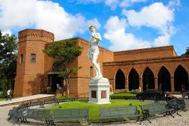

Situada no bairro da Várzea, a Oficina Brennand é um verdadeiro santuário de arte cerâmica, fundado pelo renomado artista Francisco Brennand. Ocupando o terreno de uma antiga olaria da família, a oficina é um espaço onde a imaginação ganha forma através de esculturas e murais únicos. A Oficina Brennand é cercada por uma exuberante vegetação tropical, criando um ambiente místico que complementa as obras de arte expostas. Cada peça de cerâmica é uma mistura de mitologia, fantasia e realidade, transportando os visitantes para um mundo paralelo repleto de simbolismo e beleza. Passear pelos jardins e pavilhões da oficina é uma experiência inesquecível. As esculturas e instalações, distribuídas harmoniosamente pelo espaço, contam histórias que capturam a essência da criatividade e do talento de Francisco Brennand. É um lugar que inspira e cativa todos que têm a sorte de visitá-lo.
A poucos quilômetros da Oficina Brennand, no bairro da Várzea, está o Instituto Ricardo Brennand, uma instituição cultural de renome internacional, fundada pelo colecionador e empresário Ricardo Brennand. O instituto é um complexo arquitetônico impressionante, que inclui um castelo medieval, museus, galerias de arte e belos jardins. O Instituto Ricardo Brennand é famoso por abrigar uma das mais extensas coleções de armas brancas do mundo, além de um vasto acervo de obras de arte, documentos históricos e artefatos culturais. A coleção inclui pinturas, esculturas, tapeçarias e mobiliário, abrangendo períodos que vão da Idade Média ao século XX. Ao adentrar o castelo do instituto, os visitantes são transportados para uma época de cavaleiros e batalhas épicas. As galerias de arte oferecem uma rica viagem pela história da arte ocidental, com destaque para as obras do pintor holandês Frans Post, que retratam o Brasil colonial.